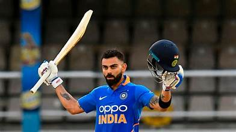
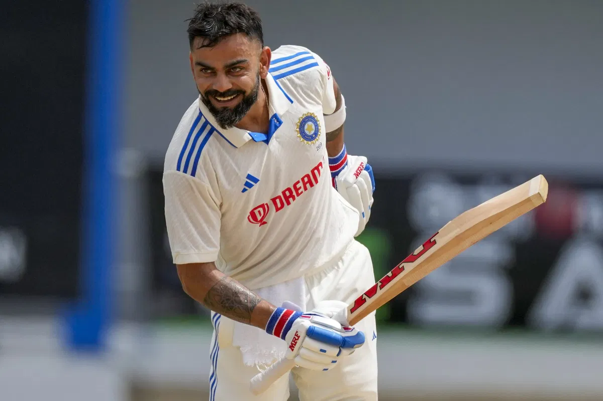
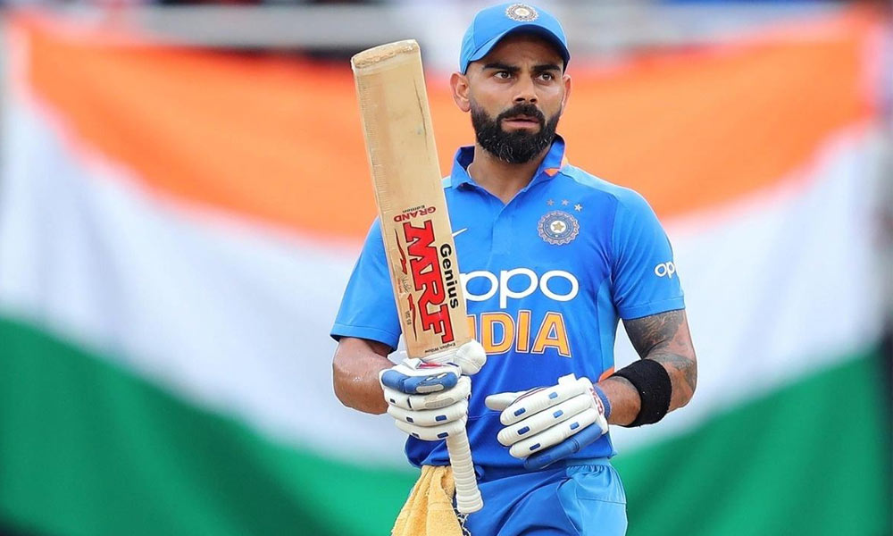
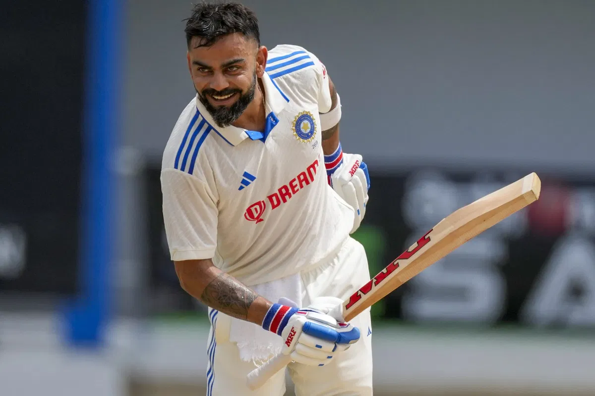
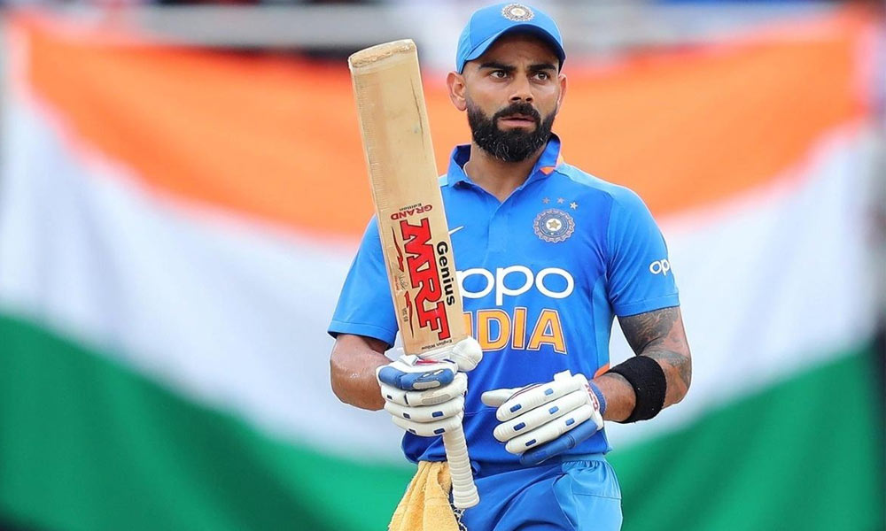
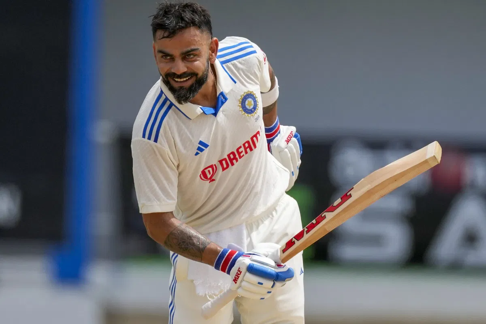
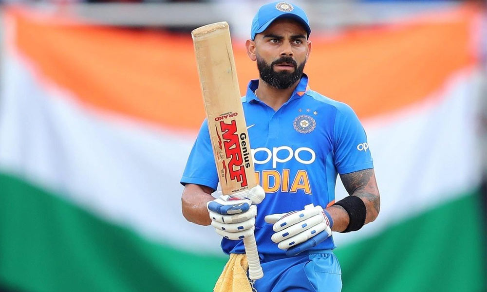
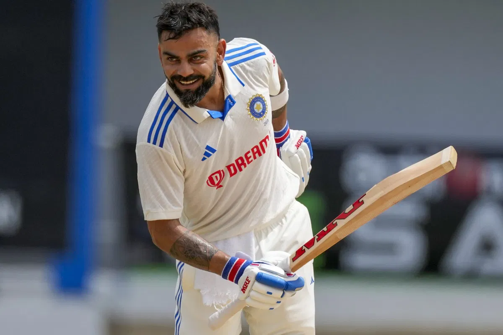
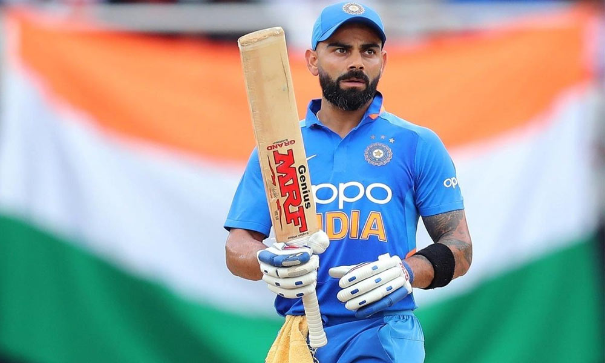

records
 +


+


+


+


Contact
mumbai@gmail.comMumbai
9773289842
Kohli has been ranked as the No. 1 batsman in both ODI and Test cricket multiple times.
His highest ICC rating points in ODIs were 911, achieved in 2018, making him one of the best in the world.
Kohli is one of the fastest to 8,000, 9,000, 10,000, 11,000, and 12,000 runs in ODIs.
He has scored over 12,000 runs in ODIs with an average of over 58.
He has scored more than 45 ODI centuries, placing him second only to Sachin Tendulkar.
Kohli has scored over 8,000 runs in Test cricket, with an average of around 50.
He has 29 Test centuries to his name.Kohli holds the record for the most double centuries by an Indian captain in Test cricket
Kohli is one of the top scorers in T20 International cricket, with over 4,000 runs.